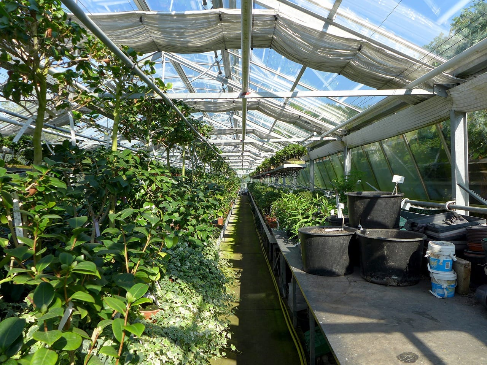

Nuestra historia
Vivero Raíz nació como un pequeño proyecto familiar, inspirado por el amor a las plantas y la naturaleza. Comenzamos cultivando algunas especies en nuestro jardín y compartiéndolas con amigos y vecinos.
Con el paso del tiempo, el proyecto fue creciendo y se convirtió en un espacio dedicado a ofrecer plantas de interior y exterior para todo tipo de hogares.
Actualmente continuamos trabajando con la misma dedicación, ayudando a cada persona a encontrar una planta adecuada para su espacio y enseñándole cómo cuidarla.